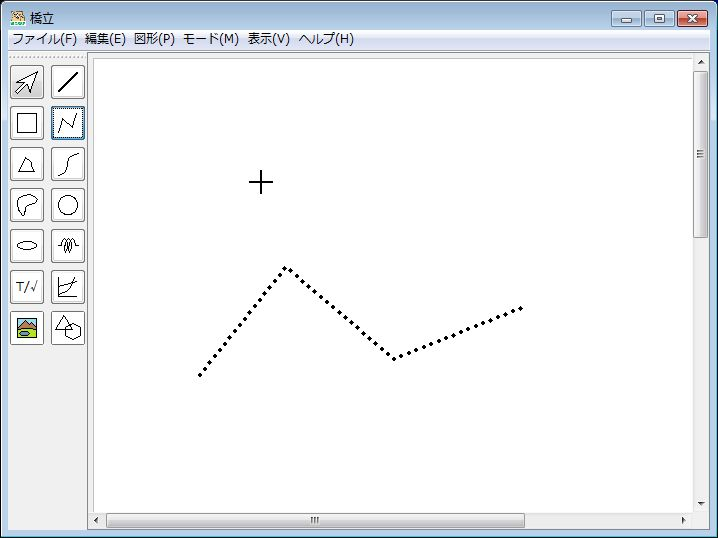

- (1) 図形ツールバーの、をクリックする、または、図形メニューで折れ線、多角形をクリックする → 描画モードになり、描画領域でカーソルが
 になる
になる
- (2) 描画領域をクリックする → 折れ線/多角形の始点が確定する
- (3) 移動してクリックする → 点が追加されて、始点との間に直線が描画される
- (4) 移動してクリックする → 点が追加されて、直前にクリックした点との間に直線が描画される
- (4)を繰り返す → 折れ線/多角形を描いていく
- (5) ダブルクリックする → 終点が確定する
墨字モード

|
点字モード

|